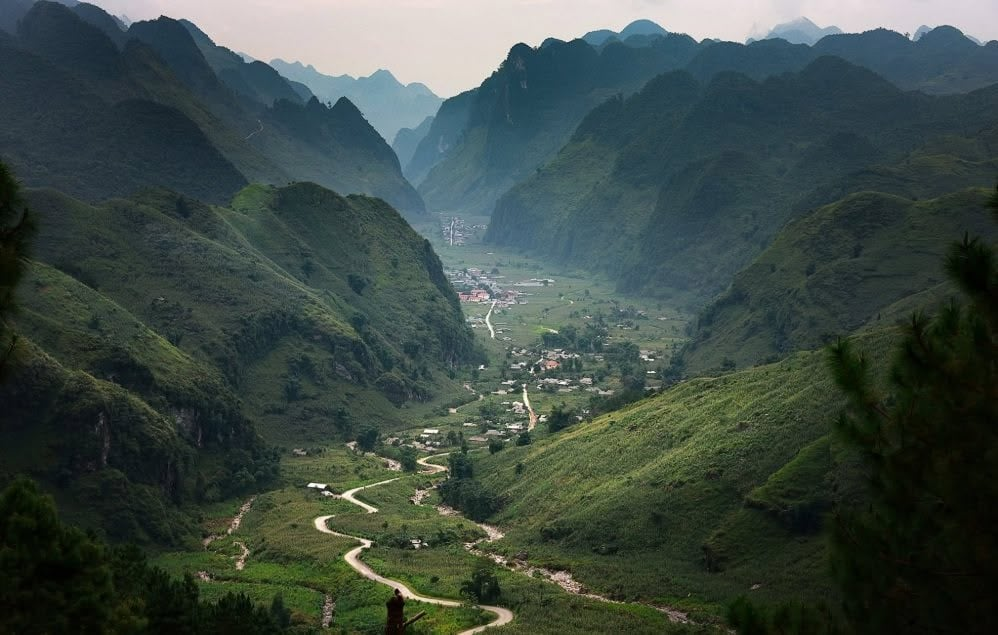

Tây Bắc RegionRuộng bậc thang · Jasmine tea source
Floral · clean · calming
Jasmine Tea
Vietnamese green tea scented with jasmine blossoms for a soft floral aroma and refreshing finish. At Rễ, it represents the delicate side of local sourcing and the beauty of the Tây Bắc landscape.